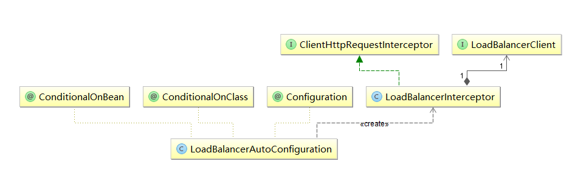
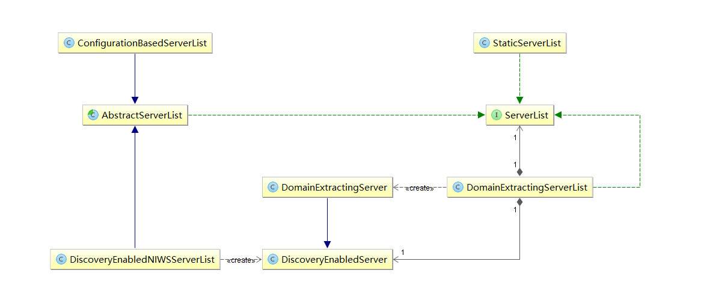

友情提示：本文较长，请选择一个较为舒适的姿势来阅读 “友情提示：本文较长，请选择一个较为舒适的姿势来阅读”)友情提示：本文较长，请选择一个较为舒适的姿势来阅读
1. @LoadBalanced 注解 在之前介绍使用Ribbon进行服务消费的时候，我们用到了RestTemplate，但是熟悉Spring的同学们是否产生过这样的疑问：RestTemplate不是Spring自己就有的吗？跟Ribbon的客户端负载均衡又有什么关系呢？下面在本文，我们来看RestTemplate和Ribbon是如何联系起来并实现客户端负载均衡的。
首先，回顾一下之前的消费者示例：我们是如何实现客户端负载均衡的？仔细观察一下代码之前的代码，我们可以发现在消费者的例子中，可能就是这个注解@LoadBalanced是之前没有接触过的，并且从命名上来看也与负载均衡相关。我们不妨以此为线索来看看源码实现的机制。
从@LoadBalanced注解源码的注释中，我们可以知道该注解用来给RestTemplate标记，以使用负载均衡的客户端（LoadBalancerClient）来配置它。
通过搜索LoadBalancerClient，我们可以发现这是Spring Cloud中定义的一个接口：
1 2 3 4 5 6 7 8 9 public interface LoadBalancerClient ServiceInstance choose (String serviceId) ; <T> T execute (String serviceId, LoadBalancerRequest<T> request) throws IOException ; URI reconstructURI (ServiceInstance instance, URI original) ; }
从该接口中，我们可以通过定义的抽象方法来了解到客户端负载均衡器中应具备的几种能力：
ServiceInstance choose(String serviceId)：根据传入的服务名serviceId，从负载均衡器中挑选一个对应服务的实例。T execute(String serviceId, LoadBalancerRequest request) throws IOException：使用从负载均衡器中挑选出的服务实例来执行请求内容。URI reconstructURI(ServiceInstance instance, URI original)：为系统构建一个合适的“host:port”形式的URI。在分布式系统中，我们使用逻辑上的服务名称作为host来构建URI（替代服务实例的“host:port”形式）进行请求，比如：http://myservice/path/to/service。在该操作的定义中，前者ServiceInstance对象是带有host和port的具体服务实例，而后者URI对象则是使用逻辑服务名定义为host的URI，而返回的URI内容则是通过ServiceInstance的服务实例详情拼接出的具体“host:post”形式的请求地址。
顺着LoadBalancerClient接口的所属包org.springframework.cloud.client.loadbalancer，我们对其内容进行整理，可以得出如下图的关系：

从类的命名上我们初步判断LoadBalancerAutoConfiguration为实现客户端负载均衡器的自动化配置类。通过查看源码，我们可以验证这一点假设：
1 2 3 4 5 6 7 8 9 10 11 12 13 14 15 16 17 18 19 20 21 22 23 24 25 26 27 28 29 30 31 32 33 34 35 36 37 38 39 40 41 42 43 44 45 46 @Configuration @ConditionalOnClass (RestTemplate.class)@ConditionalOnBean (LoadBalancerClient.class)public class LoadBalancerAutoConfiguration @LoadBalanced @Autowired (required = false ) private List<RestTemplate> restTemplates = Collections.emptyList(); @Bean public SmartInitializingSingleton loadBalancedRestTemplateInitializer ( final List<RestTemplateCustomizer> customizers) return new SmartInitializingSingleton() { @Override public void afterSingletonsInstantiated () for (RestTemplate restTemplate : LoadBalancerAutoConfiguration.this .restTemplates) { for (RestTemplateCustomizer customizer : customizers) { customizer.customize(restTemplate); } } } }; } @Bean @ConditionalOnMissingBean public RestTemplateCustomizer restTemplateCustomizer ( final LoadBalancerInterceptor loadBalancerInterceptor) return new RestTemplateCustomizer() { @Override public void customize (RestTemplate restTemplate) List<ClientHttpRequestInterceptor> list = new ArrayList<>( restTemplate.getInterceptors()); list.add(loadBalancerInterceptor); restTemplate.setInterceptors(list); } }; } @Bean public LoadBalancerInterceptor ribbonInterceptor ( LoadBalancerClient loadBalancerClient) return new LoadBalancerInterceptor(loadBalancerClient); } }
从LoadBalancerAutoConfiguration类头上的注解可以知道Ribbon实现的负载均衡自动化配置需要满足下面两个条件：
@ConditionalOnClass(RestTemplate.class)：RestTemplate类必须存在于当前工程的环境中。@ConditionalOnBean(LoadBalancerClient.class)：在Spring的Bean工程中有必须有LoadBalancerClient的实现Bean。
在该自动化配置类中，主要做了下面三件事：
创建了一个LoadBalancerInterceptor的Bean，用于实现对客户端发起请求时进行拦截，以实现客户端负载均衡。
创建了一个RestTemplateCustomizer的Bean，用于给RestTemplate增加LoadBalancerInterceptor拦截器。
维护了一个被@LoadBalanced注解修饰的RestTemplate对象列表，并在这里进行初始化，通过调用RestTemplateCustomizer的实例来给需要客户端负载均衡的RestTemplate增加LoadBalancerInterceptor拦截器。
接下来，我们看看LoadBalancerInterceptor拦截器是如何将一个普通的RestTemplate变成客户端负载均衡的：
1 2 3 4 5 6 7 8 9 10 11 12 13 14 15 16 17 18 19 20 21 22 23 24 25 26 27 28 29 30 31 32 33 34 35 36 37 38 39 40 41 42 public class LoadBalancerInterceptor implements ClientHttpRequestInterceptor private LoadBalancerClient loadBalancer; public LoadBalancerInterceptor (LoadBalancerClient loadBalancer) this .loadBalancer = loadBalancer; } @Override public ClientHttpResponse intercept (final HttpRequest request, final byte [] body, final ClientHttpRequestExecution execution) throws IOException final URI originalUri = request.getURI(); String serviceName = originalUri.getHost(); return this .loadBalancer.execute(serviceName, new LoadBalancerRequest<ClientHttpResponse>() { @Override public ClientHttpResponse apply (final ServiceInstance instance) throws Exception { HttpRequest serviceRequest = new ServiceRequestWrapper(request, instance); return execution.execute(serviceRequest, body); } }); } private class ServiceRequestWrapper extends HttpRequestWrapper private final ServiceInstance instance; public ServiceRequestWrapper (HttpRequest request, ServiceInstance instance) super (request); this .instance = instance; } @Override public URI getURI () URI uri = LoadBalancerInterceptor.this .loadBalancer.reconstructURI( this .instance, getRequest().getURI()); return uri; } } }
通过源码以及之前的自动化配置类，我们可以看到在拦截器中注入了LoadBalancerClient的实现。当一个被@LoadBalanced注解修饰的RestTemplate对象向外发起HTTP请求时，会被LoadBalancerInterceptor类的intercept函数所拦截。由于我们在使用RestTemplate时候采用了服务名作为host，所以直接从HttpRequest的URI对象中通过getHost()就可以拿到服务名，然后调用execute函数去根据服务名来选择实例并发起实际的请求。
分析到这里，LoadBalancerClient还只是一个抽象的负载均衡器接口，所以我们还需要找到它的具体实现类来进一步分析。通过查看ribbon的源码，我们可以很容易的在org.springframework.cloud.netflix.ribbon包下找到对应的实现类：RibbonLoadBalancerClient。
1 2 3 4 5 6 7 8 9 10 11 12 13 14 15 16 17 18 19 20 21 22 23 24 25 26 27 28 public <T> T execute (String serviceId, LoadBalancerRequest<T> request) throws IOException { ILoadBalancer loadBalancer = getLoadBalancer(serviceId); Server server = getServer(loadBalancer); if (server == null ) { throw new IllegalStateException("No instances available for " + serviceId); } RibbonServer ribbonServer = new RibbonServer(serviceId, server, isSecure(server, serviceId), serverIntrospector(serviceId).getMetadata(server)); RibbonLoadBalancerContext context = this .clientFactory .getLoadBalancerContext(serviceId); RibbonStatsRecorder statsRecorder = new RibbonStatsRecorder(context, server); try { T returnVal = request.apply(ribbonServer); statsRecorder.recordStats(returnVal); return returnVal; } catch (IOException ex) { statsRecorder.recordStats(ex); throw ex; } catch (Exception ex) { statsRecorder.recordStats(ex); ReflectionUtils.rethrowRuntimeException(ex); } return null ; }
可以看到，在execute函数的实现中，第一步做的就是通过getServer根据传入的服务名serviceId去获得具体的服务实例：1 2 3 4 5 6 protected Server getServer (ILoadBalancer loadBalancer) if (loadBalancer == null ) { return null ; } return loadBalancer.chooseServer("default" ); }
通过getServer函数的实现源码，我们可以看到这里获取具体服务实例的时候并没有使用LoadBalancerClient接口中的choose函数，而是使用了ribbon自身的ILoadBalancer接口中定义的chooseServer函数。
我们先来认识一下ILoadBalancer接口：
1 2 3 4 5 6 7 8 9 10 11 12 13 14 15 16 17 18 19 20 21 22 23 24 25 26 27 28 29 30 31 32 33 34 35 36 37 38 39 40 41 42 public interface ILoadBalancer public void addServers (List<Server> newServers) public Server chooseServer (Object key) public void markServerDown (Server server) public List<Server> getReachableServers () public List<Server> getAllServers () } ``` 可以看到，在该接口中定义了一个软负载均衡器需要的一系列抽象操作（未例举过期函数）： * `addServers`：向负载均衡器中维护的实例列表增加服务实例。 * `chooseServer`：通过某种策略，从负载均衡器中挑选出一个具体的服务实例。 * `markServerDown`：用来通知和标识负载均衡器中某个具体实例已经停止服务，不然负载均衡器在下一次获取服务实例清单前都会认为服务实例均是正常服务的。 * `getReachableServers`：获取当前正常服务的实例列表。 * `getAllServers`：获取所有已知的服务实例列表，包括正常服务和停止服务的实例。 在该接口定义中涉及到的`Server`对象定义的是一个传统的服务端节点，在该类中存储了服务端节点的一些元数据信息，包括：host、port以及一些部署信息等。  而对于该接口的实现，我们可以整理出如上图所示的结构。我们可以看到`BaseLoadBalancer`类实现了基础的负载均衡，而`DynamicServerListLoadBalancer`和`ZoneAwareLoadBalancer`在负载均衡的策略上做了一些功能的扩展。 那么在整合Ribbon的时候Spring Cloud默认采用了哪个具体实现呢？我们通过`RibbonClientConfiguration`配置类，可以知道在整合时默认采用了`ZoneAwareLoadBalancer`来实现负载均衡器。 ```java @Bean @ConditionalOnMissingBean public ILoadBalancer ribbonLoadBalancer (IClientConfig config, ServerList<Server> serverList, ServerListFilter<Server> serverListFilter, IRule rule, IPing ping) ZoneAwareLoadBalancer<Server> balancer = LoadBalancerBuilder.newBuilder() .withClientConfig(config).withRule(rule).withPing(ping) .withServerListFilter(serverListFilter).withDynamicServerList(serverList) .buildDynamicServerListLoadBalancer(); return balancer; }
下面，我们再回到RibbonLoadBalancerClient的execute函数逻辑，在通过ZoneAwareLoadBalancer的chooseServer函数获取了负载均衡策略分配到的服务实例对象Server之后，将其内容包装成RibbonServer对象（该对象除了存储了服务实例的信息之外，还增加了服务名serviceId、是否需要使用HTTPS等其他信息），然后使用该对象再回调LoadBalancerInterceptor请求拦截器中LoadBalancerRequest的apply(final ServiceInstance instance)函数，向一个实际的具体服务实例发起请求，从而实现一开始以服务名为host的URI请求，到实际访问host:post形式的具体地址的转换。
apply(final ServiceInstance instance)函数中传入的ServiceInstance接口是对服务实例的抽象定义。在该接口中暴露了服务治理系统中每个服务实例需要提供的一些基本信息，比如：serviceId、host、port等，具体定义如下：1 2 3 4 5 6 7 8 9 10 11 12 13 14 public interface ServiceInstance String getServiceId () ; String getHost () ; int getPort () boolean isSecure () URI getUri () ; Map<String, String> getMetadata () ; }
而上面提到的具体包装Server服务实例的RibbonServer对象就是ServiceInstance接口的实现，可以看到它除了包含了Server对象之外，还存储了服务名、是否使用https标识以及一个Map类型的元数据集合。
1 2 3 4 5 6 7 8 9 10 11 12 13 14 15 16 17 18 19 20 21 22 23 24 25 26 27 28 29 30 31 32 33 34 35 36 37 38 39 40 41 42 43 44 45 46 47 48 49 protected static class RibbonServer implements ServiceInstance private final String serviceId; private final Server server; private final boolean secure; private Map<String, String> metadata; protected RibbonServer (String serviceId, Server server) this (serviceId, server, false , Collections.<String, String> emptyMap()); } protected RibbonServer (String serviceId, Server server, boolean secure, Map<String, String> metadata) this .serviceId = serviceId; this .server = server; this .secure = secure; this .metadata = metadata; } } ``` 那么`apply(final ServiceInstance instance)`函数，在接收到了具体`ServiceInstance`实例后，是如何通过`LoadBalancerClient`接口中的`reconstructURI`操作来组织具体请求地址的呢？ @Override public ClientHttpResponse apply (final ServiceInstance instance) throws Exception { HttpRequest serviceRequest = new ServiceRequestWrapper(request, instance); return execution.execute(serviceRequest, body); } 从`apply`的实现中，我们可以看到它具体执行的时候，还传入了`ServiceRequestWrapper`对象，该对象继承了`HttpRequestWrapper`并重写了`getURI`函数，重写后的`getURI`会通过调用`LoadBalancerClient`接口的`reconstructURI`函数来重新构建一个URI来进行访问。 ```java private class ServiceRequestWrapper extends HttpRequestWrapper private final ServiceInstance instance; @Override public URI getURI () URI uri = LoadBalancerInterceptor.this .loadBalancer.reconstructURI( this .instance, getRequest().getURI()); return uri; } }
在LoadBalancerInterceptor拦截器中，ClientHttpRequestExecution的实例具体执行execution.execute(serviceRequest, body)时，会调用InterceptingClientHttpRequest下InterceptingRequestExecution类的execute函数，具体实现如下：
1 2 3 4 5 6 7 8 9 10 11 12 13 14 15 16 17 18 19 20 21 22 23 24 25 26 27 28 29 30 31 32 33 34 35 36 37 38 39 40 41 42 43 44 45 46 47 48 49 50 51 52 53 54 55 56 57 58 59 60 61 62 63 64 65 66 67 68 69 70 71 72 73 74 75 76 77 78 79 80 81 82 83 84 85 86 public ClientHttpResponse execute (HttpRequest request, byte [] body) throws IOException if (this .iterator.hasNext()) { ClientHttpRequestInterceptor nextInterceptor = this .iterator.next(); return nextInterceptor.intercept(request, body, this ); } else { ClientHttpRequest delegate = requestFactory.createRequest(request.getURI(), request.getMethod()); delegate.getHeaders().putAll(request.getHeaders()); if (body.length > 0 ) { StreamUtils.copy(body, delegate.getBody()); } return delegate.execute(); } } ``` 可以看到在创建请求的时候`requestFactory.createRequest(request.getURI(), request.getMethod());`，这里`request.getURI()`会调用之前介绍的`ServiceRequestWrapper`对象中重写的`getURI`函数。此时，它就会使用`RibbonLoadBalancerClient`中实现的`reconstructURI`来组织具体请求的服务实例地址。 ```java public URI reconstructURI (ServiceInstance instance, URI original) Assert.notNull(instance, "instance can not be null" ); String serviceId = instance.getServiceId(); RibbonLoadBalancerContext context = this .clientFactory .getLoadBalancerContext(serviceId); Server server = new Server(instance.getHost(), instance.getPort()); boolean secure = isSecure(server, serviceId); URI uri = original; if (secure) { uri = UriComponentsBuilder.fromUri(uri).scheme("https" ).build().toUri(); } return context.reconstructURIWithServer(server, uri); } ``` 从`reconstructURI`函数中，我们可以看到，它通过`ServiceInstance`实例对象的`serviceId`，从`SpringClientFactory`类的`clientFactory`对象中获取对应`serviceId`的负载均衡器的上下文`RibbonLoadBalancerContext`对象。然后根据`ServiceInstance`中的信息来构建具体服务实例信息的`Server`对象，并使用`RibbonLoadBalancerContext`对象的`reconstructURIWithServer`函数来构建服务实例的URI。 为了帮助理解，简单介绍一下上面提到的`SpringClientFactory`和`RibbonLoadBalancerContext`： * `SpringClientFactory`类是一个用来创建客户端负载均衡器的工厂类，该工厂会为每一个不同名的ribbon客户端生成不同的Spring上下文。 * `RibbonLoadBalancerContext`类是`LoadBalancerContext`的子类，该类用于存储一些被负载均衡器使用的上下文内容和Api操作（`reconstructURIWithServer`就是其中之一）。 从`reconstructURIWithServer`的实现中我们可以看到，它同`reconstructURI`的定义类似。只是`reconstructURI`的第一个保存具体服务实例的参数使用了Spring Cloud定义的`ServiceInstance`，而`reconstructURIWithServer`中使用了Netflix中定义的`Server`，所以在`RibbonLoadBalancerClient`实现`reconstructURI`时候，做了一次转换，使用`ServiceInstance`的host和port信息来构建了一个`Server`对象来给`reconstructURIWithServer`使用。从`reconstructURIWithServer`的实现逻辑中，我们可以看到，它从`Server`对象中获取host和port信息，然后根据以服务名为host的`URI`对象original中获取其他请求信息，将两者内容进行拼接整合，形成最终要访问的服务实例的具体地址。 ```java public class LoadBalancerContext implements IClientConfigAware ... public URI reconstructURIWithServer (Server server, URI original) String host = server.getHost(); int port = server .getPort(); if (host.equals(original.getHost()) && port == original.getPort()) { return original; } String scheme = original.getScheme(); if (scheme == null ) { scheme = deriveSchemeAndPortFromPartialUri(original).first(); } try { StringBuilder sb = new StringBuilder(); sb.append(scheme).append("://" ); if (!Strings.isNullOrEmpty(original.getRawUserInfo())) { sb.append(original.getRawUserInfo()).append("@" ); } sb.append(host); if (port >= 0 ) { sb.append(":" ).append(port); } sb.append(original.getRawPath()); if (!Strings.isNullOrEmpty(original.getRawQuery())) { sb.append("?" ).append(original.getRawQuery()); } if (!Strings.isNullOrEmpty(original.getRawFragment())) { sb.append("#" ).append(original.getRawFragment()); } URI newURI = new URI(sb.toString()); return newURI; } catch (URISyntaxException e) { throw new RuntimeException(e); } } ... }
另外，从RibbonLoadBalancerClient的execute的函数逻辑中，我们还能看到在回调拦截器中，执行具体的请求之后，ribbon还通过RibbonStatsRecorder对象对服务的请求还进行了跟踪记录，这里不再展开说明，有兴趣的读者可以继续研究。
分析到这里，我们已经可以大致理清Spring Cloud中使用Ribbon实现客户端负载均衡的基本脉络。了解了它是如何通过LoadBalancerInterceptor拦截器对RestTemplate的请求进行拦截，并利用Spring Cloud的负载均衡器LoadBalancerClient将以逻辑服务名为host的URI转换成具体的服务实例的过程。同时通过分析LoadBalancerClient的Ribbon实现RibbonLoadBalancerClient，可以知道在使用Ribbon实现负载均衡器的时候，实际使用的还是Ribbon中定义的ILoadBalancer接口的实现，自动化配置会采用ZoneAwareLoadBalancer的实例来进行客户端负载均衡实现。
2 负载均衡器 通过之前的分析，我们已经对Spring Cloud如何使用Ribbon有了基本的了解。虽然Spring Cloud中定义了LoadBalancerClient为负载均衡器的接口，并且针对Ribbon实现了RibbonLoadBalancerClient，但是它在具体实现客户端负载均衡时，则是通过Ribbon的ILoadBalancer接口实现。在上一节分析时候，我们对该接口的实现结构已经做了一些简单的介绍，下面我们根据ILoadBalancer接口的实现类逐个看看它都是如何实现客户端负载均衡的。
2.1 AbstractLoadBalancer AbstractLoadBalancer是ILoadBalancer接口的抽象实现。在该抽象类中定义了一个关于服务实例的分组枚举类ServerGroup，它包含了三种不同类型：ALL-所有服务实例、STATUS_UP-正常服务的实例、STATUS_NOT_UP-停止服务的实例；实现了一个chooseServer()函数，该函数通过调用接口中的chooseServer(Object key)实现，其中参数key为null，表示在选择具体服务实例时忽略key的条件判断；最后还定义了两个抽象函数，getServerList(ServerGroup serverGroup)定义了根据分组类型来获取不同的服务实例列表，getLoadBalancerStats()定义了获取LoadBalancerStats对象的方法，LoadBalancerStats对象被用来存储负载均衡器中各个服务实例当前的属性和统计信息，这些信息非常有用，我们可以利用这些信息来观察负载均衡器的运行情况，同时这些信息也是用来制定负载均衡策略的重要依据。
1 2 3 4 5 6 7 8 9 10 11 12 13 14 15 16 17 18 19 20 21 22 23 24 25 26 27 28 29 30 31 32 33 34 35 36 37 38 39 40 41 42 43 44 45 46 47 48 49 50 51 52 53 54 55 56 57 58 59 60 61 62 63 64 65 66 67 68 69 70 71 72 73 74 75 76 77 78 79 80 81 82 public abstract class AbstractLoadBalancer implements ILoadBalancer public enum ServerGroup{ ALL, STATUS_UP, STATUS_NOT_UP } public Server chooseServer () return chooseServer(null ); } public abstract List<Server> getServerList (ServerGroup serverGroup) public abstract LoadBalancerStats getLoadBalancerStats () } ``` ## 2.2 BaseLoadBalancer `BaseLoadBalancer`类是Ribbon负载均衡器的基础实现类，在该类中定义很多关于均衡负载器相关的基础内容： * 定义并维护了两个存储服务实例`Server`对象的列表。一个用于存储所有服务实例的清单，一个用于存储正常服务的实例清单。 ```java @Monitor (name = PREFIX + "AllServerList" , type = DataSourceType.INFORMATIONAL) protected volatile List<Server> allServerList = Collections .synchronizedList(new ArrayList<Server>()); @Monitor (name = PREFIX + "UpServerList" , type = DataSourceType.INFORMATIONAL) protected volatile List<Server> upServerList = Collections .synchronizedList(new ArrayList<Server>()); ``` * 定义了之前我们提到的用来存储负载均衡器各服务实例属性和统计信息的`LoadBalancerStats`对象。 * 定义了检查服务实例是否正常服务的`IPing`对象，在`BaseLoadBalancer`中默认为null ，需要在构造时注入它的具体实现。 * 定义了检查服务实例操作的执行策略对象`IPingStrategy`，在`BaseLoadBalancer`中默认使用了该类中定义的静态内部类`SerialPingStrategy`实现。根据源码，我们可以看到该策略采用线性遍历ping服务实例的方式实现检查。该策略在当我们实现的`IPing`速度不理想，或是`Server`列表过大时，可能变的不是很为理想，这时候我们需要通过实现`IPingStrategy`接口并实现`pingServers(IPing ping, Server[] servers)`函数去扩展ping的执行策略。 ```java private static class SerialPingStrategy implements IPingStrategy @Override public boolean [] pingServers(IPing ping, Server[] servers) { int numCandidates = servers.length; boolean [] results = new boolean [numCandidates]; if (logger.isDebugEnabled()) { logger.debug("LoadBalancer: PingTask executing [" + numCandidates + "] servers configured" ); } for (int i = 0 ; i < numCandidates; i++) { results[i] = false ; try { if (ping != null ) { results[i] = ping.isAlive(servers[i]); } } catch (Throwable t) { logger.error("Exception while pinging Server:" + servers[i], t); } } return results; } } ``` * 定义了负载均衡的处理规则`IRule`对象，从`BaseLoadBalancer`中`chooseServer(Object key)`的实现源码，我们可以知道负载均衡器实际进行服务实例选择任务是委托给了`IRule`实例中的`choose`函数来实现。而在这里，默认初始化了`RoundRobinRule`为`IRule`的实现对象。`RoundRobinRule`实现了最基本且常用的线性负载均衡规则。 ```java public Server chooseServer (Object key) if (counter == null ) { counter = createCounter(); } counter.increment(); if (rule == null ) { return null ; } else { try { return rule.choose(key); } catch (Throwable t) { return null ; } } }
2.3 DynamicServerListLoadBalancer DynamicServerListLoadBalancer类继承于BaseLoadBalancer类，它是对基础负载均衡器的扩展。在该负载均衡器中，实现了服务实例清单的在运行期的动态更新能力；同时，它还具备了对服务实例清单的过滤功能，也就是说我们可以通过过滤器来选择性的获取一批服务实例清单。下面我们具体来看看在该类中增加了一些什么内容：
2.3.1 ServerList 从DynamicServerListLoadBalancer的成员定义中，我们马上可以发现新增了一个关于服务列表的操作对象：ServerList<T> serverListImpl。其中泛型T从类名中对于T的限定DynamicServerListLoadBalancer<T extends Server>可以获知它是一个Server的子类，即代表了一个具体的服务实例的扩展类。而ServerList接口定义如下所示：1 2 3 4 5 6 public interface ServerList <T extends Server \> public List<T> getInitialListOfServers () public List<T> getUpdatedListOfServers () }
它定义了两个抽象方法：getInitialListOfServers用于获取初始化的服务实例清单，而getUpdatedListOfServers用于获取更新的服务实例清单。那么该接口的实现有哪些呢？通过搜索源码，我们可以整出如下图的结构：

从图中我们可以看到有很多个ServerList的实现类，那么在DynamicServerListLoadBalancer中的ServerList默认配置到底使用了哪个具体实现呢？既然在该负载均衡器中需要实现服务实例的动态更新，那么势必需要ribbon具备访问eureka来获取服务实例的能力，所以我们从Spring Cloud整合ribbon与eureka的包org.springframework.cloud.netflix.ribbon.eureka下探索，可以找到配置类EurekaRibbonClientConfiguration，在该类中可以找到看到下面创建ServerList实例的内容：
1 2 3 4 5 6 7 8 9 10 11 12 13 14 15 16 17 18 19 20 21 22 23 24 25 26 27 28 29 30 31 32 33 34 35 36 37 38 39 40 41 42 @Bean @ConditionalOnMissingBean public ServerList<?> ribbonServerList(IClientConfig config) { DiscoveryEnabledNIWSServerList discoveryServerList = new DiscoveryEnabledNIWSServerList( config); DomainExtractingServerList serverList = new DomainExtractingServerList( discoveryServerList, config, this .approximateZoneFromHostname); return serverList; } ``` 可以看到，这里创建的是一个`DomainExtractingServerList`实例，从下面它的源码中我们可以看到在它内部还定义了一个`ServerList list`。同时，`DomainExtractingServerList`类中对`getInitialListOfServers`和`getUpdatedListOfServers`的具体实现，其实委托给了内部定义的`ServerList list`对象，而该对象是通过创建`DomainExtractingServerList`时候，由构造函数传入的`DiscoveryEnabledNIWSServerList`实现的。 ```java public class DomainExtractingServerList implements ServerList <DiscoveryEnabledServer > private ServerList<DiscoveryEnabledServer> list; private IClientConfig clientConfig; private boolean approximateZoneFromHostname; public DomainExtractingServerList (ServerList<DiscoveryEnabledServer> list, IClientConfig clientConfig, boolean approximateZoneFromHostname) this .list = list; this .clientConfig = clientConfig; this .approximateZoneFromHostname = approximateZoneFromHostname; } @Override public List<DiscoveryEnabledServer> getInitialListOfServers () List<DiscoveryEnabledServer> servers = setZones(this .list .getInitialListOfServers()); return servers; } @Override public List<DiscoveryEnabledServer> getUpdatedListOfServers () List<DiscoveryEnabledServer> servers = setZones(this .list .getUpdatedListOfServers()); return servers; } ... }
那么DiscoveryEnabledNIWSServerList是如何实现这两个服务实例的获取的呢？我们从源码中可以看到这两个方法都是通过该类中的一个私有函数obtainServersViaDiscovery来通过服务发现机制来实现服务实例的获取。
1 2 3 4 5 6 7 8 9 10 11 12 13 14 15 16 17 18 19 20 21 22 23 24 25 26 27 28 29 30 31 32 33 34 35 36 37 38 39 40 41 42 @Override public List<DiscoveryEnabledServer> getInitialListOfServers () return obtainServersViaDiscovery(); } @Override public List<DiscoveryEnabledServer> getUpdatedListOfServers () return obtainServersViaDiscovery(); } ``` 而`obtainServersViaDiscovery`的实现逻辑如下，主要依靠`EurekaClient`从服务注册中心中获取到具体的服务实例`InstanceInfo`列表（`EurekaClient`的具体实现，我们在分析Eureka的源码时已经做了详细的介绍，这里传入的`vipAddress`可以理解为逻辑上的服务名，比如“USER-SERVICE”）。接着，对这些服务实例进行遍历，将状态为“UP”（正常服务）的实例转换成`DiscoveryEnabledServer`对象，最后将这些实例组织成列表返回。 ```java private List<DiscoveryEnabledServer> obtainServersViaDiscovery () List<DiscoveryEnabledServer> serverList = new ArrayList<DiscoveryEnabledServer>(); if (eurekaClientProvider == null || eurekaClientProvider.get() == null ) { logger.warn("EurekaClient has not been initialized yet, returning an empty list" ); return new ArrayList<DiscoveryEnabledServer>(); } EurekaClient eurekaClient = eurekaClientProvider.get(); if (vipAddresses!=null ){ for (String vipAddress : vipAddresses.split("," )) { List<InstanceInfo> listOfInstanceInfo = eurekaClient.getInstancesByVipAddress( vipAddress, isSecure, targetRegion); for (InstanceInfo ii : listOfInstanceInfo) { if (ii.getStatus().equals(InstanceStatus.UP)) { DiscoveryEnabledServer des = new DiscoveryEnabledServer(ii, isSecure, shouldUseIpAddr); des.setZone(DiscoveryClient.getZone(ii)); serverList.add(des); } } if (serverList.size()>0 && prioritizeVipAddressBasedServers){ break ; } } } return serverList; }
在DiscoveryEnabledNIWSServerList中通过EurekaClient从服务注册中心获取到最新的服务实例清单后，返回的List到了DomainExtractingServerList类中，将继续通过setZones函数进行处理，而这里的处理具体内容如下，主要完成将DiscoveryEnabledNIWSServerList返回的List列表中的元素，转换成内部定义的DiscoveryEnabledServer的子类对象DomainExtractingServer，在该对象的构造函数中将为服务实例对象设置一些必要的属性，比如id、zone、isAliveFlag、readyToServe等信息。
1 2 3 4 5 6 7 8 9 10 11 12 13 14 15 16 17 18 19 20 21 22 23 24 25 26 27 private List<DiscoveryEnabledServer> setZones (List<DiscoveryEnabledServer> servers) List<DiscoveryEnabledServer> result = new ArrayList<>(); boolean isSecure = this .clientConfig.getPropertyAsBoolean( CommonClientConfigKey.IsSecure, Boolean.TRUE); boolean shouldUseIpAddr = this .clientConfig.getPropertyAsBoolean( CommonClientConfigKey.UseIPAddrForServer, Boolean.FALSE); for (DiscoveryEnabledServer server : servers) { result.add(new DomainExtractingServer(server, isSecure, shouldUseIpAddr, this .approximateZoneFromHostname)); } return result; } ``` ### 2.3.2 ServerListUpdater 通过上面的分析我们已经知道了Ribbon与Eureka整合后，如何实现从Eureka Server中获取服务实例清单。那么它又是如何触发向Eureka Server去获取服务实例清单以及如何在获取到服务实例清单后更新本地的服务实例清单的呢？继续来看`DynamicServerListLoadBalancer`中的实现内容，我们可以很容易的找到下面定义的关于`ServerListUpdater`的内容： ```java protected final ServerListUpdater.UpdateAction updateAction = new ServerListUpdater.UpdateAction() { @Override public void doUpdate () updateListOfServers(); } }; protected volatile ServerListUpdater serverListUpdater;
根据该接口的命名，我们基本就能猜到，这个对象实现的是对ServerList的更新，所以可以称它为“服务更新器”，从下面的源码中可以看到，在ServerListUpdater内部还定义了一个UpdateAction接口，上面定义的updateAction对象就是以匿名内部类的方式创建了一个它的具体实现，其中doUpdate实现的内容就是对ServerList的具体更新操作。除此之外，“服务更新器”中还定义了一系列控制它和获取它一些信息的操作。
1 2 3 4 5 6 7 8 9 10 11 12 13 14 15 16 17 18 19 20 21 22 23 24 25 26 27 28 29 30 31 32 33 34 35 36 37 38 39 40 41 42 43 44 45 46 47 48 49 50 51 52 53 54 55 56 57 58 59 60 61 62 63 64 65 66 67 68 69 public interface ServerListUpdater public interface UpdateAction void doUpdate () } void start (UpdateAction updateAction) void stop () String getLastUpdate () ; long getDurationSinceLastUpdateMs () int getNumberMissedCycles () int getCoreThreads () } ``` 而`ServerListUpdater`的实现类不多，具体下图所示。  根据两个类的注释，我们可以很容易的知道它们的作用分别是： * `PollingServerListUpdater`：动态服务列表更新的默认策略，也就是说`DynamicServerListLoadBalancer`负载均衡器中的默认实现就是它，它通过定时任务的方式进行服务列表的更新。 * `EurekaNotificationServerListUpdater`：该更新器也可服务于`DynamicServerListLoadBalancer`负载均衡器，但是它的触发机制与`PollingServerListUpdater`不同，它需要利用Eureka的事件监听器来驱动服务列表的更新操作。 下面我们来详细看看它默认实现的`PollingServerListUpdater`。先从用于启动“服务更新器”的`start`函数源码看起，具体如下。我们可以看到`start`函数的实现内容验证了之前提到的：以定时任务的方式进行服务列表的更新。它先创建了一个`Runnable`的线程实现，在该实现中调用了上面提到的具体更新服务实例列表的方法`updateAction.doUpdate()`，最后再为这个`Runnable`的线程实现启动了一个定时任务来执行。 ```java @Override public synchronized void start (final UpdateAction updateAction) if (isActive.compareAndSet(false , true )) { final Runnable wrapperRunnable = new Runnable() { @Override public void run () if (!isActive.get()) { if (scheduledFuture != null ) { scheduledFuture.cancel(true ); } return ; } try { updateAction.doUpdate(); lastUpdated = System.currentTimeMillis(); } catch (Exception e) { logger.warn("Failed one update cycle" , e); } } }; scheduledFuture = getRefreshExecutor().scheduleWithFixedDelay( wrapperRunnable, initialDelayMs, refreshIntervalMs, TimeUnit.MILLISECONDS ); } else { logger.info("Already active, no-op" ); } }
继续看PollingServerListUpdater的其他内容，我们可以找到用于启动定时任务的2个重要参数initialDelayMs和refreshIntervalMs的默认定义分别为1000和30*1000，单位为毫秒。也就是说更新服务实例在初始化之后延迟1秒后开始执行，并以30秒为周期重复执行。除了这些内容之外，我们还能看到它还会记录最后更新时间、是否存活等信息，同时也实现了ServerListUpdater中定义的一些其他操作内容，这些操作相对比较简单，这里不再具体说明，有兴趣的读者可以自己查看源码了解其实现原理。
2.3.3 ServerListFilter 在了解了更新服务实例的定时任务是如何启动的之后，我们继续回到updateAction.doUpdate()调用的具体实现位置，在DynamicServerListLoadBalancer中，它的实际实现委托给了updateListOfServers函数，具体实现如下：
1 2 3 4 5 6 7 8 9 10 11 12 13 14 15 16 17 18 19 20 21 22 23 24 25 26 27 28 29 30 31 32 33 34 35 36 37 38 39 40 41 42 43 44 45 46 47 48 49 50 51 52 53 54 55 56 57 58 59 60 61 62 63 64 65 66 67 68 69 70 71 72 73 74 75 76 77 78 79 80 81 82 83 84 85 86 87 88 89 90 91 92 93 94 95 96 97 98 99 100 101 102 103 104 105 106 107 108 109 110 111 112 113 114 115 116 117 118 119 120 121 122 123 124 125 126 127 128 129 130 131 132 133 134 135 136 137 138 139 140 141 142 143 144 145 146 147 148 149 150 151 152 153 154 155 156 157 158 159 160 161 162 163 164 165 166 167 168 169 170 171 172 173 174 175 176 177 178 179 180 181 182 183 184 185 186 187 188 189 190 191 192 193 194 195 196 197 198 199 200 201 202 203 204 205 206 207 208 209 210 211 212 213 214 215 216 217 218 219 220 221 222 223 224 225 226 227 228 229 230 231 232 233 234 235 236 237 238 239 240 241 242 243 244 245 246 247 248 249 250 251 252 253 254 255 256 257 258 259 260 261 262 263 264 265 266 267 268 269 270 271 272 273 274 275 276 277 278 279 280 281 282 283 284 285 286 287 288 289 290 291 292 293 294 295 296 297 298 299 300 301 302 303 304 305 306 307 308 309 310 311 312 313 314 315 316 317 318 319 320 321 322 323 324 325 326 327 328 329 330 331 332 333 334 335 336 337 338 339 340 341 342 343 344 345 346 347 348 349 350 351 352 353 354 355 356 357 358 359 360 361 public void updateListOfServers () List<T> servers = new ArrayList<T>(); if (serverListImpl != null ) { servers = serverListImpl.getUpdatedListOfServers(); LOGGER.debug("List of Servers for {} obtained from Discovery client: {}" , getIdentifier(), servers); if (filter != null ) { servers = filter.getFilteredListOfServers(servers); LOGGER.debug("Filtered List of Servers for {} obtained from Discovery client: {}" , getIdentifier(), servers); } } updateAllServerList(servers); } ``` 可以看到，这里终于用到了我们之前提到的`ServerList`的`getUpdatedListOfServers`，通过之前的介绍我们已经可以知道这一步实现了从Eureka Server中获取服务可用实例的列表。在获得了服务实例列表之后，这里又将引入一个新的对象`filter`，追朔该对象的定义，我们可以找到它是`ServerListFilter`定义的。 `ServerListFilter`接口非常简单，该接口中之定义了一个方法`List getFilteredListOfServers (List servers) `，主要用于实现对服务实例列表的过滤，通过传入的服务实例清单，根据一些规则返回过滤后的服务实例清单。该接口的实现如下图所示：  其中，除了`ZonePreferenceServerListFilter`的实现是Spring Cloud Netflix中对Ribbon的扩展实现外，其他均是Netflix Ribbon中的实现类。我们可以分别看看这些过滤器实现都有什么特点： * `AbstractServerListFilter`：这是一个抽象过滤器，在这里定义了过滤时需要的一个重要依据对象`LoadBalancerStats`，我们在之前介绍过的，该对象存储了关于负载均衡器的一些属性和统计信息等。 ```java public abstract class AbstractServerListFilter<T extends Server> implements ServerListFilter<T> private volatile LoadBalancerStats stats; public void setLoadBalancerStats (LoadBalancerStats stats) this .stats = stats; } public LoadBalancerStats getLoadBalancerStats () return stats; } } ``` * `ZoneAffinityServerListFilter`：该过滤器基于“区域感知（Zone Affinity）”的方式实现服务实例的过滤，也就是说它会根据提供服务的实例所处区域（Zone）与消费者自身的所处区域（Zone）进行比较，过滤掉那些不是同处一个区域的实例。 ```java public List<T> getFilteredListOfServers (List<T> servers) if (zone != null && (zoneAffinity || zoneExclusive) && servers !=null && servers.size() > 0 ){ List<T> filteredServers = Lists.newArrayList(Iterables.filter( servers, this .zoneAffinityPredicate.getServerOnlyPredicate())); if (shouldEnableZoneAffinity(filteredServers)) { return filteredServers; } else if (zoneAffinity) { overrideCounter.increment(); } } return servers; } ``` 从上面的源码中我们可以看到，对于服务实例列表的过滤是通过`Iterables.filter(servers, this .zoneAffinityPredicate.getServerOnlyPredicate())`来实现的，其中判断依据由`ZoneAffinityPredicate`实现服务实例与消费者的Zone比较。而在过滤之后，这里并不会马上返回过滤的结果，而是通过`shouldEnableZoneAffinity`函数来判断是否要启用“区域感知”的功能，从下面`shouldEnableZoneAffinity`的实现中，我们可以看到，它使用了`LoadBalancerStats`的`getZoneSnapshot`方法来获取这些过滤后的同区域实例的基础指标（包含了：实例数量、断路器断开数、活动请求数、实例平均负载等），根据一系列的算法求出下面的几个评价值并与设置的阈值对比（下面的为默认值），若有一个条件符合，就不启用“区域感知”过滤的服务实例清单。这一算法实现对于集群出现区域故障时，依然可以依靠其他区域的实例进行正常服务提供了完善的高可用保障。同时，通过这里的介绍，我们也可以关联着来理解之前介绍Eureka的时候提到的对于区域分配设计来保证跨区域故障的高可用问题。 * blackOutServerPercentage：故障实例百分比（断路器断开数 / 实例数量） >= 0.8 * activeReqeustsPerServer：实例平均负载 >= 0.6 * availableServers：可用实例数（实例数量 - 断路器断开数） < 2 ```java private boolean shouldEnableZoneAffinity (List<T> filtered) if (!zoneAffinity && !zoneExclusive) { return false ; } if (zoneExclusive) { return true ; } LoadBalancerStats stats = getLoadBalancerStats(); if (stats == null ) { return zoneAffinity; } else { logger.debug("Determining if zone affinity should be enabled with given server list: {}" , filtered); ZoneSnapshot snapshot = stats.getZoneSnapshot(filtered); double loadPerServer = snapshot.getLoadPerServer(); int instanceCount = snapshot.getInstanceCount(); int circuitBreakerTrippedCount = snapshot.getCircuitTrippedCount(); if (((double ) circuitBreakerTrippedCount) / instanceCount >= blackOutServerPercentageThreshold.get() || loadPerServer >= activeReqeustsPerServerThreshold.get() || (instanceCount - circuitBreakerTrippedCount) < availableServersThreshold.get()) { logger.debug("zoneAffinity is overriden. blackOutServerPercentage: {}, activeReqeustsPerServer: {}, availableServers: {}" , new Object[] {(double ) circuitBreakerTrippedCount / instanceCount, loadPerServer, instanceCount - circuitBreakerTrippedCount}); return false ; } else { return true ; } } } ``` * `DefaultNIWSServerListFilter`：该过滤器完全继承自`ZoneAffinityServerListFilter`，是默认的NIWS（Netflix Internal Web Service）过滤器。 * `ServerListSubsetFilter`：该过滤器也继承自`ZoneAffinityServerListFilter`，它非常适用于拥有大规模服务器集群(上百或更多)的系统。因为它可以产生一个“区域感知”结果的子集列表，同时它还能够通过比较服务实例的通信失败数量和并发连接数来判定该服务是否健康来选择性的从服务实例列表中剔除那些相对不够健康的实例。该过滤器的实现主要分为三步： 1 . 获取“区域感知”的过滤结果，来作为候选的服务实例清单 2 . 从当前消费者维护的服务实例子集中剔除那些相对不够健康的实例（同时也将这些实例从候选清单中剔除，防止第三步的时候又被选入），不够健康的标准如下： a. 服务实例的并发连接数超过客户端配置的值，默认为`0 `，配置参数为：`<clientName>.<nameSpace>.ServerListSubsetFilter.eliminationConnectionThresold` b. 服务实例的失败数超过客户端配置的值，默认为`0 `，配置参数为：`<clientName>.<nameSpace>.ServerListSubsetFilter.eliminationFailureThresold` c. 如果按符合上面任一规则的服务实例剔除后，剔除比例小于客户端默认配置的百分比，默认为`0.1 `（10 %），配置参数为：`<clientName>.<nameSpace>.ServerListSubsetFilter.forceEliminatePercent`。那么就先对剩下的实例列表进行健康排序，再开始从最不健康实例进行剔除，直到达到配置的剔除百分比。 3 . 在完成剔除后，清单已经少了至少10 %（默认值）的服务实例，最后通过随机的方式从候选清单中选出一批实例加入到清单中，以保持服务实例子集与原来的数量一致，而默认的实例子集数量为`20 `，其配置参数为：`<clientName>.<nameSpace>.ServerListSubsetFilter.size`。 * `ZonePreferenceServerListFilter`：Spring Cloud整合时新增的过滤器。若使用Spring Cloud整合Eureka和Ribbon时会默认使用该过滤器。它实现了通过配置或者Eureka实例元数据的所属区域（Zone）来过滤出同区域的服务实例。如下面的源码所示，它的实现非常简单，首先通过父类`ZoneAffinityServerListFilter`的过滤器来获得“区域感知”的服务实例列表，然后遍历这个结果取出根据消费者配置预设的区域Zone来进行过滤，如果过滤的结果是空的就直接返回父类获取的结果，如果不为空就返回通过消费者配置的Zone过滤后的结果。 ```java @Override public List<Server> getFilteredListOfServers (List<Server> servers) List<Server> output = super .getFilteredListOfServers(servers); if (this .zone != null && output.size() == servers.size()) { List<Server> local = new ArrayList<Server>(); for (Server server : output) { if (this .zone.equalsIgnoreCase(server.getZone())) { local.add(server); } } if (!local.isEmpty()) { return local; } } return output; } ``` ## 2.4 ZoneAwareLoadBalancer `ZoneAwareLoadBalancer`负载均衡器是对`DynamicServerListLoadBalancer`的扩展。在`DynamicServerListLoadBalancer`中，我们可以看到它并没有重写选择具体服务实例的`chooseServer`函数，所以它依然会采用在`BaseLoadBalancer`中实现的算法，使用`RoundRobinRule`规则，以线性轮询的方式来选择调用的服务实例，该算法实现简单并没有区域（Zone）的概念，所以它会把所有实例视为一个Zone下的节点来看待，这样就会周期性的产生跨区域（Zone）访问的情况，由于跨区域会产生更高的延迟，这些实例主要以防止区域性故障实现高可用为目的而不能作为常规访问的实例，所以在多区域部署的情况下会有一定的性能问题，而该负载均衡器则可以避免这样的问题。那么它是如何实现的呢？ 首先，在`ZoneAwareLoadBalancer`中，我们可以发现，它并没有重写`setServersList`，说明实现服务实例清单的更新主逻辑没有修改。但是我们可以发现它重写了这个函数：`setServerListForZones(Map<String, List<Server>> zoneServersMap)`。看到这里可能会有一些陌生，因为它并不是接口中定义的必备函数，所以我们不妨去父类`DynamicServerListLoadBalancer`中寻找一下该函数，我们可以找到下面的定义了： ```java public void setServersList (List lsrv) super .setServersList(lsrv); List<T> serverList = (List<T>) lsrv; Map<String, List<Server>> serversInZones = new HashMap<String, List<Server>>(); ... setServerListForZones(serversInZones); } protected void setServerListForZones (Map<String, List<Server>> zoneServersMap) LOGGER.debug("Setting server list for zones: {}" , zoneServersMap); getLoadBalancerStats().updateZoneServerMapping(zoneServersMap); } ``` `setServerListForZones`函数的调用位于更新服务实例清单函数`setServersList`的最后，同时从其实现内容来看，它在父类`DynamicServerListLoadBalancer`中的作用是根据按区域Zone分组的实例列表，为负载均衡器中的`LoadBalancerStats`对象创建`ZoneStats`并放入`Map zoneStatsMap`集合中，每一个区域Zone会对应一个`ZoneStats`，它用于存储每个Zone的一些状态和统计信息。 在`ZoneAwareLoadBalancer`中对`setServerListForZones`的重写如下： ```java protected void setServerListForZones (Map<String, List<Server>> zoneServersMap) super .setServerListForZones(zoneServersMap); if (balancers == null ) { balancers = new ConcurrentHashMap<String, BaseLoadBalancer>(); } for (Map.Entry<String, List<Server>> entry: zoneServersMap.entrySet()) { String zone = entry.getKey().toLowerCase(); getLoadBalancer(zone).setServersList(entry.getValue()); } for (Map.Entry<String, BaseLoadBalancer> existingLBEntry: balancers.entrySet()) { if (!zoneServersMap.keySet().contains(existingLBEntry.getKey())) { existingLBEntry.getValue().setServersList(Collections.emptyList()); } } } ``` 可以看到，在该实现中创建了一个`ConcurrentHashMap()`类型的`balancers`对象，它将用来存储每个Zone区域对应的负载均衡器，而具体的负载均衡器的创建则是通过下面的第一个循环中调用`getLoadBalancer`函数来完成，同时在创建负载均衡器的时候会创建它的规则（如果当前实现中没有`IRULE`的实例，就创建一个`AvailabilityFilteringRule`规则；如果已经有具体实例，就clone一个），在创建完负载均衡器后又马上调用`setServersList`函数为其设置对应Zone区域的实例清单。而第二个循环则是对Zone区域中实例清单的检查，看看是否有Zone区域下已经没有实例了，是的话就将`balancers`中对应Zone区域的实例列表清空，该操作的作用是为了后续选择节点时，防止过时的Zone区域统计信息干扰具体实例的选择算法。 在了解了该负载均衡器是如何扩展服务实例清单的实现后，我们来具体看看它是如何挑选服务实例，来实现对区域的识别的： ```java public Server chooseServer (Object key) if (!ENABLED.get() || getLoadBalancerStats().getAvailableZones().size() <= 1 ) { logger.debug("Zone aware logic disabled or there is only one zone" ); return super .chooseServer(key); } Server server = null ; try { LoadBalancerStats lbStats = getLoadBalancerStats(); Map<String, ZoneSnapshot> zoneSnapshot = ZoneAvoidanceRule.createSnapshot(lbStats); logger.debug("Zone snapshots: {}" , zoneSnapshot); ... Set<String> availableZones = ZoneAvoidanceRule.getAvailableZones(zoneSnapshot, triggeringLoad.get(), triggeringBlackoutPercentage.get()); logger.debug("Available zones: {}" , availableZones); if (availableZones != null && availableZones.size() < zoneSnapshot.keySet().size()) { String zone = ZoneAvoidanceRule.randomChooseZone(zoneSnapshot, availableZones); logger.debug("Zone chosen: {}" , zone); if (zone != null ) { BaseLoadBalancer zoneLoadBalancer = getLoadBalancer(zone); server = zoneLoadBalancer.chooseServer(key); } } } catch (Throwable e) { logger.error("Unexpected exception when choosing server using zone aware logic" , e); } if (server != null ) { return server; } else { logger.debug("Zone avoidance logic is not invoked." ); return super .chooseServer(key); } } ``` 从源码中我们可以看到，只有当负载均衡器中维护的实例所属Zone区域个数大于1 的时候才会执行这里的选择策略，否则还是将使用父类的实现。当Zone区域个数大于1 个的时候，它的实现步骤主要如下： * 调用`ZoneAvoidanceRule`中的静态方法`createSnapshot(lbStats)`，为当前负载均衡器中所有的Zone区域分别创建快照，保存在`Map zoneSnapshot`中，这些快照中的数据将用于后续的算法。 * 调用`ZoneAvoidanceRule`中的静态方法`getAvailableZones(zoneSnapshot, triggeringLoad.get(), triggeringBlackoutPercentage.get())`，来获取可用的Zone区域集合，在该函数中会通过Zone区域快照中的统计数据来实现可用区的挑选。 * 首先它会剔除符合这些规则的Zone区域：所属实例数为零的Zone区域；Zone区域内实例平均负载小于零，或者实例故障率（断路器断开次数/实例数）大于等于阈值（默认为0.99999 ）。 * 然后根据Zone区域的实例平均负载来计算出最差的Zone区域，这里的最差指的是实例平均负载最高的Zone区域。 * 如果在上面的过程中没有符合剔除要求的区域，同时实例最大平均负载小于阈值（默认为20 %），就直接返回所有Zone区域为可用区域。否则，从最坏Zone区域集合中随机的选择一个，将它从可用Zone区域集合中剔除。 * 当获得的可用Zone区域集合不为空，并且个数小于Zone区域总数，就随机的选择一个Zone区域。 * 在确定了某个Zone区域后，则获取对应Zone区域的服务均衡器，并调用`chooseServer`来选择具体的服务实例，而在`chooseServer`中将使用`IRule`接口的`choose`函数来选择具体的服务实例。在这里`IRule`接口的实现会使用`ZoneAvoidanceRule`来挑选出具体的服务实例。 # 3 负载均衡策略 -------------------------- 通过上面的源码解读，我们已经对Ribbon实现的负载均衡器以及其中包含的服务实例过滤器、服务实例信息的存储对象、区域的信息快照等都有了深入的认识和理解，但是对于负载均衡器中的服务实例选择策略只是讲解了几个默认实现的内容，而对于`IRule`的其他实现还没有详细的解读，下面我们来看看在Ribbon中共提供了那些负载均衡的策略实现。  如上图所示，我们可以看到在Ribbon中实现了非常多的选择策略，其中也包含了我们在前面内容中提到过的：`RoundRobinRule`和`ZoneAvoidanceRule`。下面我们来详细的解读一下`IRule`接口的各个实现。 ## 3.1 AbstractLoadBalancerRule 负载均衡策略的抽象类，在该抽象类中定义了负载均衡器`ILoadBalancer`对象，该对象能够在具体实现选择服务策略时，获取到一些负载均衡器中维护的信息来作为分配依据，并以此设计一些算法来实现针对特定场景的高效策略。 ```java public abstract class AbstractLoadBalancerRule implements IRule , IClientConfigAware private ILoadBalancer lb; @Override public void setLoadBalancer (ILoadBalancer lb) this .lb = lb; } @Override public ILoadBalancer getLoadBalancer () return lb; } } ``` ## 3.2 RandomRule 该策略实现了从服务实例清单中随机选择一个服务实例的功能。它的具体实现如下，可以看到`IRule`接口的`choose(Object key)`函数实现，委托给了该类中的`choose(ILoadBalancer lb, Object key)`，该方法增加了一个负载均衡器对象的参数。从具体的实现上看，它会使用传入的负载均衡器来获得可用实例列表`upList`和所有实例列表`allList`，并通过`rand.nextInt(serverCount)`函数来获取一个随机数，并将该随机数作为upList的索引值来返回具体实例。同时，具体的选择逻辑在一个`while (server == null )`循环之内，而根据选择逻辑的实现，正常情况下每次选择都应该能够选出一个服务实例，如果出现死循环获取不到服务实例时，则很有可能存在并发的Bug。 ```java @Override public Server choose (Object key) return choose(getLoadBalancer(), key); } public Server choose (ILoadBalancer lb, Object key) ... Server server = null ; while (server == null ) { if (Thread.interrupted()) { return null ; } List<Server> upList = lb.getReachableServers(); List<Server> allList = lb.getAllServers(); int serverCount = allList.size(); if (serverCount == 0 ) { return null ; } int index = rand.nextInt(serverCount); server = upList.get(index); if (server == null ) { Thread.yield(); continue ; } if (server.isAlive()) { return (server); } server = null ; Thread.yield(); } return server; } ``` ## 3.3 RoundRobinRule 该策略实现了按照线性轮询的方式依次选择每个服务实例的功能。它的具体实现如下，其详细结构与`RandomRule`非常类似。除了循环条件不同外，就是从可用列表中获取所谓的逻辑不同。从循环条件中，我们可以看到增加了一个`count`计数变量，该变量会在每次循环之后累加，也就是说如果一直选择不到server超过10 次，那么就会结束尝试，并打印一个警告信息`No available alive servers after 10 tries from load balancer: ...`。而线性轮询的实现则是通过`AtomicInteger nextServerCyclicCounter`对象实现，每次进行实例选择时通过调用`incrementAndGetModulo`函数实现递增。 ```java public Server choose (ILoadBalancer lb, Object key) ... Server server = null ; int count = 0 ; while (server == null && count++ < 10 ) { List<Server> reachableServers = lb.getReachableServers(); List<Server> allServers = lb.getAllServers(); int upCount = reachableServers.size(); int serverCount = allServers.size(); if ((upCount == 0 ) || (serverCount == 0 )) { log.warn("No up servers available from load balancer: " + lb); return null ; } int nextServerIndex = incrementAndGetModulo(serverCount); server = allServers.get(nextServerIndex); if (server == null ) { Thread.yield(); continue ; } if (server.isAlive() && (server.isReadyToServe())) { return (server); } server = null ; } if (count >= 10 ) { log.warn("No available alive servers after 10 tries from load balancer: " + lb); } return server; } ``` ## 3.4 RetryRule 该策略实现了一个具备重试机制的实例选择功能。从下面的实现中我们可以看到，在其内部还定义了一个`IRule`对象，默认使用了`RoundRobinRule`实例。而在`choose`方法中的则实现了对内部定义的策略进行反复尝试的策略，若期间能够选择到具体的服务实例就返回，若选择不到就根据设置的尝试结束时间为阈值（`maxRetryMillis`参数定义的值 \+ `choose`方法开始执行的时间戳），当超过该阈值后就返回null 。 ```java public class RetryRule extends AbstractLoadBalancerRule IRule subRule = new RoundRobinRule(); long maxRetryMillis = 500 ; ... public Server choose (ILoadBalancer lb, Object key) long requestTime = System.currentTimeMillis(); long deadline = requestTime + maxRetryMillis; Server answer = null ; answer = subRule.choose(key); if (((answer == null ) || (!answer.isAlive())) && (System.currentTimeMillis() < deadline)) { InterruptTask task = new InterruptTask(deadline - System.currentTimeMillis()); while (!Thread.interrupted()) { answer = subRule.choose(key); if (((answer == null ) || (!answer.isAlive())) && (System.currentTimeMillis() < deadline)) { Thread.yield(); } else { break ; } } task.cancel(); } if ((answer == null ) || (!answer.isAlive())) { return null ; } else { return answer; } } ... }
3.5 WeightedResponseTimeRule 该策略是对RoundRobinRule的扩展，增加了根据实例的运行情况来计算权重，并根据权重来挑选实例，以达到更优的分配效果，它的实现主要有三个核心内容：
3.5.1 定时任务 WeightedResponseTimeRule策略在初始化的时候会通过serverWeightTimer.schedule(new DynamicServerWeightTask(), 0, serverWeightTaskTimerInterval)启动一个定时任务，用来为每个服务实例计算权重，该任务默认30秒执行一次。
1 2 3 4 5 6 7 8 9 10 11 12 13 14 15 16 17 18 19 20 21 22 23 24 25 26 27 28 29 30 31 32 33 34 35 36 37 38 39 40 41 42 43 44 45 46 47 48 49 50 class DynamicServerWeightTask extends TimerTask public void run () ServerWeight serverWeight = new ServerWeight(); try { serverWeight.maintainWeights(); } catch (Throwable t) { logger.error("Throwable caught while running DynamicServerWeightTask for " + name, t); } } } ``` ### 3.5.2 权重计算 在源码中我们可以轻松找到用于存储权重的对象：`List<Double> accumulatedWeights = new ArrayList<Double>()`，该List中每个权重值所处的位置对应了负载均衡器维护的服务实例清单中所有实例在清单中的位置。 维护实例权重的计算过程通过`maintainWeights`函数实现，具体如下源码所示： ```java public void maintainWeights () ILoadBalancer lb = getLoadBalancer(); ... try { logger.info("Weight adjusting job started" ); AbstractLoadBalancer nlb = (AbstractLoadBalancer) lb; LoadBalancerStats stats = nlb.getLoadBalancerStats(); ... double totalResponseTime = 0 ; for (Server server : nlb.getAllServers()) { ServerStats ss = stats.getSingleServerStat(server); totalResponseTime += ss.getResponseTimeAvg(); } Double weightSoFar = 0.0 ; List<Double> finalWeights = new ArrayList<Double>(); for (Server server : nlb.getAllServers()) { ServerStats ss = stats.getSingleServerStat(server); double weight = totalResponseTime - ss.getResponseTimeAvg(); weightSoFar += weight; finalWeights.add(weightSoFar); } setWeights(finalWeights); } catch (Throwable t) { logger.error("Exception while dynamically calculating server weights" , t); } finally { serverWeightAssignmentInProgress.set(false ); } }
该函数的实现主要分为两个步骤：
根据LoadBalancerStats中记录的每个实例的统计信息，累加所有实例的平均响应时间，得到总平均响应时间totalResponseTime，该值会用于后续的计算。
为负载均衡器中维护的实例清单逐个计算权重（从第一个开始），计算规则为：weightSoFar + totalResponseTime - 实例的平均响应时间，其中weightSoFar初始化为零，并且每计算好一个权重需要累加到weightSoFar上供下一次计算使用。totalResponseTime则的上计算结果。
举个简单的例子来理解这个计算过程：假设有4个实例A、B、C、D，他们的平均响应时间为：10、40、80、100，所以总响应时间是10 + 40 + 80 + 100 = 230，每个实例的权重为总响应时间与实例自身的平均响应时间的差的累积获得，所以实例A、B、C、D的权重分别为：
实例A：230 - 10 = 220
实例B：220 + （230 - 40）= 410
实例C：410 + （230 - 80）= 560
实例D：560 + （230 - 100）= 690
需要注意的是，这里的权重值只是表示了各实例权重区间的上限，并非某个实例的优先级，所以不是数值越大被选中的概率就越大。那么什么是权重区间呢？以上面例子的计算结果为例，它实际上是为这4个实例构建了4个不同的区间，每个实例的区间下限是上一个实例的区间上限，而每个实例的区间上限则是我们上面计算并存储于List accumulatedWeights中的权重值，其中第一个实例的下限默认为零。所以，根据上面示例的权重计算结果，我们可以得到每个实例的权重区间：
实例A：[0, 220]
实例B：(220, 410]
实例C：(410, 560]
实例D：(560，690)
我们不难发现，实际上每个区间的宽度就是：总的平均响应时间 - 实例的平均响应时间，所以实例的平均响应时间越短、权重区间的宽度越大，而权重区间的宽度越大被选中的概率就越高。可能很多读者会问，这些区间边界的开闭是如何确定的呢？为什么不那么规则？下面我们会通过实例选择算法的解读来解释。
3.5.3 实例选择 WeightedResponseTimeRule选择实例的实现与之前介绍的算法结构类似，下面是它主体的算法（省略了循环体和一些判断等处理）：
1 2 3 4 5 6 7 8 9 10 11 12 13 14 15 16 17 18 19 20 21 22 23 24 25 26 27 28 29 30 31 32 33 34 35 36 37 38 39 40 41 42 43 44 45 46 47 48 49 50 51 52 53 54 55 56 57 58 59 60 61 62 63 64 65 public Server choose (ILoadBalancer lb, Object key) ... List<Double> currentWeights = accumulatedWeights; ... List<Server> allList = lb.getAllServers(); int serverCount = allList.size(); if (serverCount == 0 ) { return null ; } int serverIndex = 0 ; double maxTotalWeight = currentWeights.size() == 0 ? 0 : currentWeights.get(currentWeights.size() - 1 ); if (maxTotalWeight < 0.001 d) { server = super .choose(getLoadBalancer(), key); if (server == null ) { return server; } } else { double randomWeight = random.nextDouble() * maxTotalWeight; int n = 0 ; for (Double d : currentWeights) { if (d >= randomWeight) { serverIndex = n; break ; } else { n++; } } server = allList.get(serverIndex); } ... return server; } ``` 从源码中，我们可以看到，选择实例的核心过程就两步： * 生产一个`[0 , 最大权重值)`区间内的随机数。 * 遍历权重列表，比较权重值与随机数的大小，如果权重值大于等于随机数，就拿当前权重列表的索引值去服务实例列表中获取具体实例。这就是在上一节中提到的服务实例会根据权重区间挑选的原理，而权重区间边界的开闭原则根据算法，正常应该每个区间为`(x, y]`的形式，但是第一个实例和最后一个实例为什么不同呢？由于随机数的最小取值可以为`0 `，所以第一个实例的下限是闭区间，同时随机数的最大值取不到最大权重值，所以最后一个实例的上限是开区间。 若继续以上面的数据为例，进行服务实例的选择，则该方法会从`[0 , 690 )`区间中选出一个随机数，比如选出的随机数为230 ，由于该值位于第二个区间，所以此时就会选择实例B来进行请求。 ## 3.6 ClientConfigEnabledRoundRobinRule 该策略较为特殊，我们一般不直接使用它。因为它本身并没有实现什么特殊的处理逻辑，正如下面的源码所示，在它的内部定义了一个`RoundRobinRule`策略，而`choose`函数的实现也正是使用了`RoundRobinRule`的线性轮询机制，所以它实现的功能实际上与`RoundRobinRule`相同，那么定义它有什么特殊的用处呢？ 虽然我们不会直接使用该策略，但是通过继承该策略，那么默认的`choose`就实现了线性轮询机制，在子类中做一些高级策略时通常都有可能会存在一些无法实施的情况，那么就可以通过父类的实现作为备选。在后文中我们将继续介绍的高级策略均是基于`ClientConfigEnabledRoundRobinRule`的扩展。 ```java public class ClientConfigEnabledRoundRobinRule extends AbstractLoadBalancerRule RoundRobinRule roundRobinRule = new RoundRobinRule(); ... @Override public Server choose (Object key) if (roundRobinRule != null ) { return roundRobinRule.choose(key); } else { throw new IllegalArgumentException( "This class has not been initialized with the RoundRobinRule class" ); } } }
3.7 BestAvailableRule 该策略继承自ClientConfigEnabledRoundRobinRule，在实现中它注入了负载均衡器的统计对象：LoadBalancerStats，同时在具体的choose算法中利用LoadBalancerStats保存的实例统计信息来选择满足要求的实例。从如下源码中我们可以看到，它通过遍历负载均衡器中维护的所有服务实例，会过滤掉故障的实例，并找出并发请求数最小的一个，所以该策略的特性是选出最空闲的实例。
1 2 3 4 5 6 7 8 9 10 11 12 13 14 15 16 17 18 19 20 21 22 23 24 25 26 27 28 29 30 31 32 33 34 35 36 37 38 39 40 41 42 43 44 45 46 47 48 49 50 public Server choose (Object key) if (loadBalancerStats == null ) { return super .choose(key); } List<Server> serverList = getLoadBalancer().getAllServers(); int minimalConcurrentConnections = Integer.MAX_VALUE; long currentTime = System.currentTimeMillis(); Server chosen = null ; for (Server server: serverList) { ServerStats serverStats = loadBalancerStats.getSingleServerStat(server); if (!serverStats.isCircuitBreakerTripped(currentTime)) { int concurrentConnections = serverStats.getActiveRequestsCount(currentTime); if (concurrentConnections < minimalConcurrentConnections) { minimalConcurrentConnections = concurrentConnections; chosen = server; } } } if (chosen == null ) { return super .choose(key); } else { return chosen; } } ``` 同时，由于该算法的核心依据是统计对象`loadBalancerStats`，当其为空的时候，该策略是无法执行的。所以从源码中我们可以看到，当`loadBalancerStats`为空的时候，它会采用父类的线性轮询策略，正如我们在介绍`ClientConfigEnabledRoundRobinRule`时那样，它的子类在无法满足实现高级策略时候，可以使用线性轮询策略的特性。后面将要介绍的策略因为也都继承自`ClientConfigEnabledRoundRobinRule`，所以他们都会具有这样的特性。 ## 3.8 PredicateBasedRule 这是一个抽象策略，它也继承了`ClientConfigEnabledRoundRobinRule`，从其命名中可以猜出他是一个基于`Predicate`实现的策略，`Predicate`是Google Guava Collection工具对集合进行过滤的条件接口。 如下源码所示，它定义了一个抽象函数`getPredicate`来获取`AbstractServerPredicate`对象的实现，而在`choose`函数中，通过`AbstractServerPredicate`的`chooseRoundRobinAfterFiltering`函数来选出具体的服务实例。从该函数的命名我们也大致能猜出它的基础逻辑：先通过子类中实现的`Predicate`逻辑来过滤一部分服务实例，然后再以线性轮询的方式从过滤后的实例清单中选出一个。 ```java public abstract class PredicateBasedRule extends ClientConfigEnabledRoundRobinRule public abstract AbstractServerPredicate getPredicate () @Override public Server choose (Object key) ILoadBalancer lb = getLoadBalancer(); Optional<Server> server = getPredicate().chooseRoundRobinAfterFiltering(lb.getAllServers(), key); if (server.isPresent()) { return server.get(); } else { return null ; } } }
通过下面AbstractServerPredicate的源码片段，可以证实我们上面所做的猜测。在上面choose函数中调用的chooseRoundRobinAfterFiltering方法先通过内部定义的getEligibleServers函数来获取备选的实例清单（实现了过滤），如果返回的清单为空，则用Optional.absent()来表示不存在，反之则以线性轮询的方式从备选清单中获取一个实例。
1 2 3 4 5 6 7 8 9 10 11 12 13 14 15 16 17 18 19 20 21 22 23 24 25 26 public abstract class AbstractServerPredicate implements Predicate <PredicateKey > ... public Optional<Server> chooseRoundRobinAfterFiltering (List<Server> servers, Object loadBalancerKey) List<Server> eligible = getEligibleServers(servers, loadBalancerKey); if (eligible.size() == 0 ) { return Optional.absent(); } return Optional.of(eligible.get(nextIndex.getAndIncrement() % eligible.size())); } public List<Server> getEligibleServers (List<Server> servers, Object loadBalancerKey) if (loadBalancerKey == null ) { return ImmutableList.copyOf(Iterables.filter(servers, this .getServerOnlyPredicate())); } else { List<Server> results = Lists.newArrayList(); for (Server server: servers) { if (this .apply(new PredicateKey(loadBalancerKey, server))) { results.add(server); } } return results; } } }
在了解了整体逻辑之后，我们来详细看看实现过滤功能的getEligibleServers函数。从源码上看，它的实现结构非常简单清晰，通过遍历服务清单，使用this.apply方法来判断实例是否需要保留，是就添加到结果列表中。
可能到这里，不熟悉Google Guava Collections集合工具的读者会比较困惑，这个apply在AbstractServerPredicate中并找不到它的定义，那么它是如何实现过滤的呢？实际上，AbstractServerPredicate实现了com.google.common.base.Predicate接口，而apply方法是该接口中的定义，主要用来实现过滤条件的判断逻辑，它输入的参数则是过滤条件需要用到的一些信息（比如源码中的new PredicateKey(loadBalancerKey, server))，它传入了关于实例的统计信息和负载均衡器的选择算法传递过来的key）。既然在AbstractServerPredicate中我们未能找到apply的实现，所以这里的chooseRoundRobinAfterFiltering函数只是定义了一个模板策略：“先过滤清单，再轮询选择”。对于如何过滤，则需要我们在AbstractServerPredicate的子类去实现apply方法来确定具体的过滤策略了。
后面我们将要介绍的两个策略就是基于此抽象策略实现，只是它们使用了不同的Predicate实现来完成过滤逻辑以达到不同的实例选择效果。
Google Guava Collections是一个对Java Collections Framework增强和扩展的一个开源项目。虽然Java Collections Framework已经能够 满足了我们大多数情况下使用集合的要求，但是当遇到一些特殊的情况我们的代码会比较冗长且容易出错。Guava Collections 可以帮助我们的让集合操作代码更为简短精炼并大大增强代码的可读性。
3.9 AvailabilityFilteringRule 该策略继承自上面介绍的抽象策略PredicateBasedRule，所以它也继承了“先过滤清单，再轮询选择”的基本处理逻辑，其中过滤条件使用了AvailabilityPredicate：
1 2 3 4 5 6 7 8 9 10 11 12 13 14 15 16 17 18 19 20 public class AvailabilityPredicate extends AbstractServerPredicate ... public boolean apply (@Nullable PredicateKey input) LoadBalancerStats stats = getLBStats(); if (stats == null ) { return true ; } return !shouldSkipServer(stats.getSingleServerStat(input.getServer())); } private boolean shouldSkipServer (ServerStats stats) if ((CIRCUIT_BREAKER_FILTERING.get() && stats.isCircuitBreakerTripped()) || stats.getActiveRequestsCount() >= activeConnectionsLimit.get()) { return true ; } return false ; } }
从上述源码中，我们可以知道它的主要过滤逻辑位于shouldSkipServer方法中，它主要判断服务实例的两项内容：
是否故障，即断路器是否生效已断开
实例的并发请求数大于阈值，默认值为$2^{31}$ - 1，该配置我们可通过参数..ActiveConnectionsLimit来修改apply就返回false（代表该节点可能存在故障或负载过高），都不满足就返回true。
在该策略中，除了实现了上面的过滤方法之外，对于choose的策略也做了一些改进优化，所以父类的实现对于它来说只是一个备用选项，其具体实现如下：
public Server choose (Object key) int count = 0 ;
Server server = roundRobinRule.choose(key);
while (count++ <= 10 ) {
if (predicate.apply(new PredicateKey(server))) {
return server;
}
server = roundRobinRule.choose(key);
}
return super .choose(key);
}
可以看到，它并没有像父类中那样，先遍历所有的节点进行过滤，然后在过滤后的集合中选择实例。而是先线性的方式选择一个实例，接着用过滤条件来判断该实例是否满足要求，若满足就直接使用该实例，若不满足要求就再选择下一个实例，并检查是否满足要求，如此循环进行，当这个过程重复了10次还是没有找到符合要求的实例，就采用父类的实现方案。
简单的说，该策略通过线性抽样的方式直接尝试寻找可用且较空闲的实例来使用，优化了父类每次都要遍历所有实例的开销。
3.10 ZoneAvoidanceRule 该策略我们在介绍负载均衡器ZoneAwareLoadBalancer时已经提到过了，它也是PredicateBasedRule的具体实现类。在之前的介绍中主要针对ZoneAvoidanceRule中用于选择Zone区域策略的一些静态函数，比如：createSnapshot、getAvailableZones。在这里我们将详细的看看ZoneAvoidanceRule作为服务实例过滤条件的实现原理。从下面ZoneAvoidanceRule的源码片段中我们可以看到，它使用了CompositePredicate来进行服务实例清单的过滤。这是一个组合过滤条件，在其构造函数中，它以ZoneAvoidancePredicate为主过滤条件，AvailabilityPredicate为次过滤条件初始化了组合过滤条件的实例。
public class ZoneAvoidanceRule extends PredicateBasedRule private CompositePredicate compositePredicate;
public ZoneAvoidanceRule () super ();
ZoneAvoidancePredicate zonePredicate = new ZoneAvoidancePredicate(this );
AvailabilityPredicate availabilityPredicate = new AvailabilityPredicate(this );
compositePredicate = createCompositePredicate(zonePredicate, availabilityPredicate);
}
...
}
ZoneAvoidanceRule在实现的时候并没有像AvailabilityFilteringRule那样重写choose函数来优化，所以它完全遵循了父类的过滤主逻辑：“先过滤清单，再轮询选择”。其中过滤清单的条件就是我们上面提到的以ZoneAvoidancePredicate为主过滤条件、AvailabilityPredicate为次过滤条件的组合过滤条件CompositePredicate。从CompositePredicate的源码片段中，我们可以看到它定义了一个主过滤条件AbstractServerPredicate delegate以及一组次过滤条件列表List fallbacks，所以它的次过滤列表是可以拥有多个的，并且由于它采用了List存储所以次过滤条件是按顺序执行的。
public class CompositePredicate extends AbstractServerPredicate private AbstractServerPredicate delegate;
private List<AbstractServerPredicate> fallbacks = Lists.newArrayList();
private int minimalFilteredServers = 1 ;
private float minimalFilteredPercentage = 0 ;
@Override
public List<Server> getEligibleServers (List<Server> servers, Object loadBalancerKey) super .getEligibleServers(servers, loadBalancerKey);
Iterator<AbstractServerPredicate> i = fallbacks.iterator();
while (!(result.size() >= minimalFilteredServers && result.size() > (int ) (servers.size() * minimalFilteredPercentage))
&& i.hasNext()) {
AbstractServerPredicate predicate = i.next();
result = predicate.getEligibleServers(servers, loadBalancerKey);
}
return result;
}
}
再来看看获取过滤结果的实现函数getEligibleServers中，它的处理逻辑如下：
使用主过滤条件对所有实例过滤并返回过滤后的实例清单
依次使用次过滤条件列表中的过滤条件对主过滤条件的结果进行过滤
每次过滤之后（包括主过滤条件和次过滤条件），都需要判断下面两个条件，只要有一个符合就不再进行过滤，将当前结果返回供线性轮询算法选择：
过滤后的实例总数 >= 最小过滤实例数（minimalFilteredServers，默认为1）
过滤后的实例比例 > 最小过滤百分比（minimalFilteredPercentage，默认为0）
本文转自:http://blog.didispace.com/springcloud-sourcecode-ribbon/
RibbonClientConfiguration
RibbonAutoConfiguration
LoadBalancerAutoConfiguration